カテゴリーごとにポーズ状態を切り替え、通知やポーズ対応の待機処理を利用できます。「UIは動かしたままゲームプレイだけ止める」といった分け方ができます。
| 項目 | 内容 |
|---|---|
| namespace | SymphonyFrameWork.System |
| 主な公開型 | PauseManager / IPausable / PauseInfo |
| メニューパス | Window > SymphonyFrameWork > Symphony Administrator の Pause パネル |
| 設定の保存先 | Project Settings > SymphonyFrameWork > Pause Category（カテゴリー名の登録） |
カテゴリーはPauseManager.IPausableを継承した空のinterfaceで表します。 手で書いても、Project Settings > SymphonyFrameWork > Pause Category から生成しても構いません。
using SymphonyFrameWork.System;
// カテゴリーの定義。空のinterfaceでよい
public interface IGameplayPausable : PauseManager.IPausable { }
public interface IUiPausable : PauseManager.IPausable { }止めたい対象は、属したいカテゴリーを実装します。
public sealed class Enemy : MonoBehaviour, IGameplayPausable
{
private void OnEnable() => PauseManager.IPausable.RegisterPauseManager(this);
private void OnDisable() => PauseManager.IPausable.UnregisterPauseManager(this);
public void Pause() { /* 停止処理 */ }
public void Resume() { /* 再開処理 */ }
}操作と購読は型パラメータで行います。
// このカテゴリーの対象だけが止まる。UIは動き続ける
PauseManager.SetPause<IGameplayPausable>(true);
bool paused = PauseManager.IsPaused<IGameplayPausable>();
// 全部止める・どれか1つでも止まっているか
PauseManager.SetPauseAll(true);
bool anyPaused = PauseManager.IsPausedAny();
// 通知の購読。**eventは型パラメータを持てないためメソッドで受け取る**
PauseManager.AddPauseChangedHandler<IGameplayPausable>(HandlePauseChanged);
PauseManager.RemovePauseChangedHandler<IGameplayPausable>(HandlePauseChanged);
// 待機もカテゴリーを指定する
await PauseManager.PausableWaitForSecondAsync<IGameplayPausable>(1.0f, destroyCancellationToken);Coroutine、非同期処理、遅延Destroy、遅延Invoke、Tweenをポーズへ追従させられます。
どれか1つでもポーズならPause()が呼ばれ、すべて解除されたときだけResume()が呼ばれます。 対象ごとに停止要因の数を持っているため、2つ止めて片方だけ解除しても再開しません。
派生カテゴリーを実装した対象は、基底カテゴリーにも属します。基底を止めれば派生の対象も止まります。
PauseManager.IPausableを直接実装した対象は、既定カテゴリーに属します。SetPauseAllでもSetPause<PauseManager.IPausable>でも止まります。どのカテゴリーにも属さず絶対に止まらない対象は生まれません。
カテゴリーを指定しないPause、OnPauseChanged、待機系6件は非推奨です。削除はしておらず、「どれか1つでもポーズ中か」を見て従来どおり動きます。移行先はDeprecations.mdにあります。
PausableWaitForSecondAsync、PausableWaitForSecond、PausableNextFrameAsyncを使う。Task.Delayや通常のWaitForSecondsでは代用しない。Awaitableを返す。 Awaitableは1回しかawaitできず、保存も共有もできない。フィールドへ持たず、その場で待機する。複数待機はSymphonyAwaitable.WhenAll、Taskと混ぜる場合はSymphonyAwaitable.AsTaskを使う。PauseManager.IPausableは有効化時に登録し、無効化時に解除する。同じ対象を重複登録しても通知は1回だけ届く。属するカテゴリーは実装しているinterfaceから自動で決まるため、登録時にカテゴリーを渡す必要はない。IPausable.Pause()は1回しか呼ばれない。同じ値の再設定を通知の起点にしない。SetPause<TCategory>の型引数はinterfaceでなければならない。 型制約where TCategory : IPausableはIPausableを実装した具象クラスも通してしまうため、具象型を渡すとArgumentExceptionになる。Pause()が呼ばれず、解除されたときにResume()が届く。PauseManager.GetPauseInfo<TCategory>()で調べる。全体はGetPauseInfo()で、この場合PauseInfo.Categoryはnullになる。いずれも取得時点のスナップショットとして扱う。購読件数は解除し忘れの検出に使える。入口: Window > SymphonyFrameWork > Symphony Administrator
| パネル | 内容 |
|---|---|
| Pause | 全体のポーズ状態の確認と切り替え、IPausableの購読件数 |
| Pause > Categories | カテゴリーごとのポーズ状態と、属する対象の件数。 表示名の昇順で並ぶ |
Play Mode中のみ内容を持ちます。Edit Modeでは未接続状態を表示します。
入口: Project Settings > SymphonyFrameWork > Pause Category
カテゴリー名を登録して「設定を保存してinterfaceを生成」を押すと、Assets/Scripts/SymphonyFrameWork/PauseCategory/ へ PauseManager.IPausable を継承した空のinterfaceを生成します。設定した名前は I と Pausable で挟まれます（Gameplay → IGameplayPausable）。生成される名前は入力欄の隣にその場で表示されます。
| 規則 | 内容 |
|---|---|
| 生成先 | Assets/Scripts/SymphonyFrameWork/PauseCategory/。専用の SymphonyFrameWork.PauseCategory アセンブリを作り、SymphonyFrameWork を参照します |
| 名前 | C#の識別子として使えない名前は除外し、警告を出します。同じinterface名になる候補は1件だけ残します |
| 削除 | 設定から消してもファイルは削除しません。 実装しているコードがある場合に黙って消すとコンパイルが壊れるためです。残っているものは警告で知らせるので、利用者が確認して削除してください |
生成物は自動生成enumとは別のアセンブリになります。 カテゴリーは PauseManager.IPausable を継承するため SymphonyFrameWork の参照が要りますが、SymphonyFrameWork 側が SymphonyFrameWork.Enum を参照しているため、同じ場所へ置くと循環します。
Pauseも同じ形で、状態の保持、購読の管理、表示状態を分離しています。

PauseStateEntityが「状態が実際に変化したか」を判定するため、同じ値の再設定ではOnPauseChangedを発行しません。
OnPauseChanged（利用側が購読する公開event）の購読者例外は握りません。OnStateChanged（表示専用）だけは発行側で捕捉してログへ出し、ViewModelの失敗をゲーム側のポーズ処理へ波及させません。
この文書は Assets/SymphonyFrameWork/Documentation~/Modules/PauseManager.md から生成しています。編集は正本のMarkdownへ行ってください。